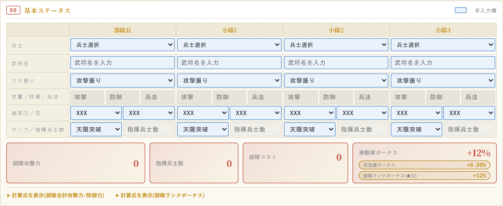
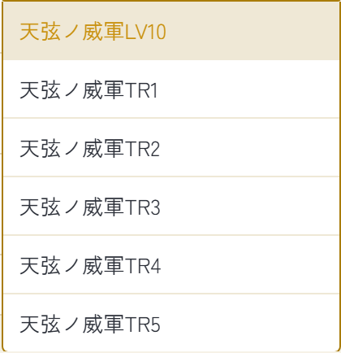
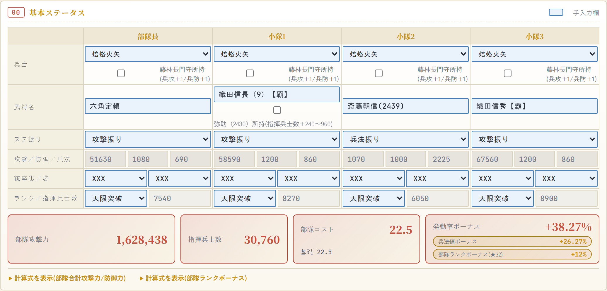
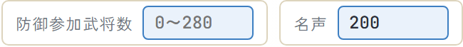
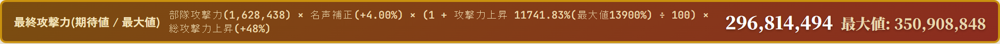
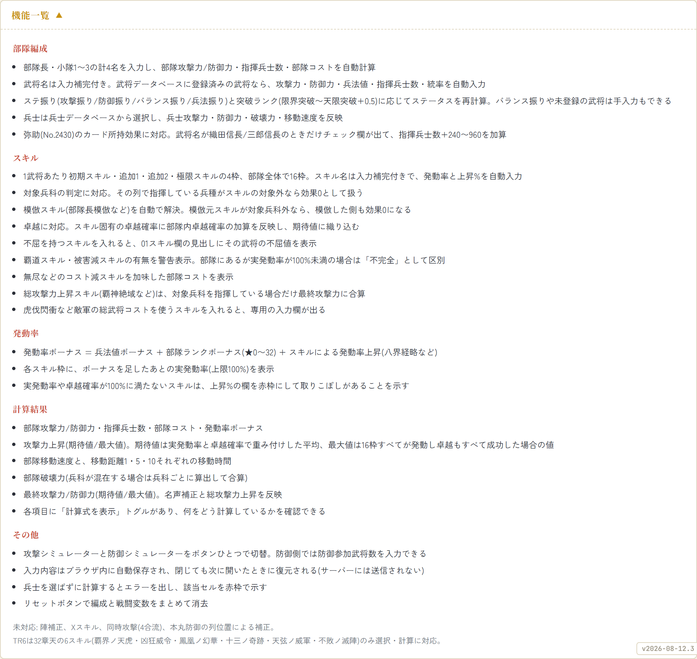
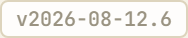

攻撃シミュレーターの使い方(v2026-08-12.6 時点)
攻撃/防御シミュレーターは、部隊長と小隊1〜3の計4名分を入力すると、最終攻撃力までを自動で出すツールです。
入力欄が多く見えますが、実際に手で入れるのは3つだけで、残りは武将データベースから引いて埋まります。
1. 兵士・武将名・スキルの3つを入れる
最初はこの状態です。青枠が手入力できる欄です。

上から順に、
- 兵士をプルダウンで選ぶ。選ばずに計算を押すとエラーのダイアログが出て、選んでいない列の兵士欄が赤枠になります
- 武将名を打つ。候補が出るので選べば、攻撃力・防御力・兵法値・指揮兵士数・統率が自動で入ります。カードNo.でも検索できます(「2439」と打てば斎藤朝信が出ます)。候補には名前の右にNo.が出るので、同名カードが並んだときはそこで見分けてください
- スキル名を打つ。こちらも候補が出て、選ぶと発動率と上昇%が自動で入ります
武将データベースに無い武将や、ステ振りで「バランス振り」を選んだ場合は、攻撃力などを手で打ち込めます。
ランク(限界突破〜天限突破+0.5)を変えると指揮兵士数とステータスが計算し直されます。
スキル名を選ぶと、鍛錬の段階があるスキルはLV10・TR1〜TR6の選択肢が続けて出ます。ここで選んだ段階の数値で計算されるので、TRを上げた武将は忘れずに選んでください。

選ぶとスキル欄が「雄飛新世TR2」「天弦ノ威軍LV10」のように段階つきの表記になります。段階を持たないスキルはこの選択が出ず、名前だけが入ります。
TR6が選べるのはパラレル天でのみ解禁される一部のスキルだけです。
条件を満たしたときだけ出るチェックボックス
入力の内容によっては、欄の下に小さなチェックボックスが現れます。常に出るものではなく、条件を満たしたときだけ出ます。対象のカードを持っているなら入れてください。持っていないなら触らなくて構いません。
出るのは2か所です。
- 兵士欄の下 … 選んだ兵種を強化するカードがある場合に出ます。兵種ごとに対応するカードが決まっていて、選び直すと出たり消えたりします
- 武将名欄の下 … 特定の武将を強化するカードがある場合に出ます。チェックを入れると、そのカードの突破ランクを選ぶ欄が続けて出ることがあります
兵士欄のほうは「そのカードを持っているかどうか」という部隊とは無関係な事実なので、1つの列でチェックを入れると同じ兵種の他の列も自動で同じ状態になります。武将名欄のほうは列ごとの設定です。
どちらも下の入力後の画像に実際に出ています。
4人分入れて「計算する」を押すと、こうなります。

この記事では以降もこの編成のままで説明します。兵士は4列とも焙烙火矢、武将は部隊長から順に
六角定頼・織田信長(9)【覇】・斎藤朝信(2439)・織田信秀【覇】です。
武将名を入れた時点で、それぞれの初期スキルが下のスキル欄に自動で入ります。3章の画像に出てくる
天弦ノ威軍・雄飛新世・富楼那ノ化身・覇界ノ天虎が、この4人の初期スキルです。
ステ振りは列ごとに選べます。上の画像では小隊2の斎藤朝信(2439)だけ兵法振りにしていて、
兵法値が500から2225まで伸びています。
この1人のステ振りを変えるだけで発動率ボーナスが+24.02%から+38.27%に上がります。
本人の攻撃力は下がるので部隊攻撃力は減りますが、部隊全員のスキルが発動しやすくなるので、
この編成では最終攻撃力(期待値)が2億5698万から2億9681万に増えました。
発動率ボーナスが効くのは発動率が100%に足りていないスキルだけです。
すでに100%のスキルしか入っていない部隊では、兵法振りにしても発動率の面では何も起きません。
2. 下に出る4つの数字
| 項目 | 意味 |
|---|---|
| 部隊攻撃力 | Σ(各武将の攻撃力 + 指揮兵士数×兵士攻撃力) × 統率補正。名声と総攻撃力上昇はまだ含みません |
| 指揮兵士数 | 4人の合計。兵士を選んでいない列は0として扱います |
| 部隊コスト | 無尽などのコスト減スキルを引いた後の値。減る前の値は「基礎」として下に小さく出ます |
| 発動率ボーナス | 兵法値ボーナス + 部隊ランクボーナス(★0〜32) + スキルによる発動率上昇の合計 |
部隊ランクボーナスは、4人のランク欄から推測した武将ランク(限界突破=6、極限突破=7、天限突破=8)を合計した★の数で決まります。★1の+0.1%から★32の+12%まで、1段ずつ上がります。4人とも天限突破なら★32で+12%です。
名声と防御参加武将数
この2つは部隊共通の値なので、01スキル欄の見出しの右端にまとめてあります。

名声は所持している名声の値を入れます。最終攻撃力に掛かる補正で、内訳は次のとおりです。
| 名声 | 補正 |
|---|---|
| 49以下 | 補正なし |
| 50〜99 | +2% |
| 100以上 | +2%+(名声÷100)%(上限+5%) |
名声200なら+4%です。部隊攻撃力の欄には反映されず、最終攻撃力の計算にだけ掛かります。
防御参加武将数は、人数依存のスキル(係数×防御参加武将数で効果が決まるもの)の計算に使います。
3. スキル欄の見かた

スキル名の下の数字が上昇%、その右下に出るのが実発動率です。実発動率は、スキル本来の発動率に発動率ボーナスを足した値(上限100%)です。
この編成の発動率ボーナスは+38.27%です。部隊長の天弦ノ威軍と、追加1に入れた瞬刻無影はどちらも本来45%のスキルなので、足して83.27%になっています。覇界ノ天虎はもともと100%なので、足しても100%どまりです。
瞬刻無影は部隊長の初期スキルを模倣するスキルで、その3300%は模倣元(天弦ノ威軍LV10)の3000%を1.1倍した値です。模倣した側は模倣元の発動率を引き継がず、模倣スキル自身の発動率で判定されます。
上昇%の欄が赤枠になっているのは、その数字が満額では入らないという印です。条件は2つあり、どちらかに当たると赤くなります。
- 実発動率が100%に届いていない(発動しない戦闘がある)
- 卓越の抽選結果しだいで値が変わる(期待値と最大値がずれる)
上の画像だと天弦ノ威軍と瞬刻無影が赤枠です。実発動率が83.27%で、残りの16.73%は発動しないからです。
覇界ノ天虎(1000%)だけが青枠なのは、実発動率が100%で卓越も持たないので、書いてある数字がそのまま入るからです。赤枠を減らすことが、そのまま期待値を最大値に近づけることになります。
総攻撃力を上げるスキルは別扱い
この編成には総攻撃力を上げるスキルが2つ入っています。小隊1の雄飛新世TR2が「総攻撃力+33%」、小隊2の富楼那ノ化身が「総攻撃力+15%」で、上昇%の欄が数字ではなくこの表示になります。
このタイプは16枠の上昇%の合計には入らず、足し合わせてから最後に部隊全体へ掛け算されます。最終攻撃力の式の末尾に出ている「総攻撃力上昇(+48%)」がその合計です。だから小隊1・小隊2の「合計上昇効果」にはこの40%と15%は入っていません。
対象兵科を指揮している列がないと乗らないので、注意してください(雄飛新世は砲・器、富楼那ノ化身は槍・砲・器が対象なので、この編成では焙烙火矢で両方とも条件を満たしています)。
4. 期待値と最大値のちがい

最終攻撃力が2つ出るのは、発動率と卓越があるからです。
| 中身 | |
|---|---|
| 期待値 | Σ(実発動率 × 上昇%)。卓越を持つスキルは卓越確率でも重み付けした平均 |
| 最大値 | Σ(上昇%)。16枠すべてが発動し、卓越もすべて成功した場合の値 |
上の例だと期待値2億9681万に対して最大値3億5090万で、5409万ほど差があります。この差は「発動しない枠がある」分です。
発動率100%かつ卓越なし(または卓越確率100%)のスキルだけで組んだときだけ、期待値と最大値が一致します。
どちらを見るべきかは目的によります。1発の上振れを狙うなら最大値、何回も攻撃したときの平均を知りたいなら期待値です。
5. 効果が乗らないときに疑うところ
スキルを入れたのに上昇%が0のままなら、多くは対象兵科を指揮していないことが原因です。
その列で指揮している兵種がスキルの対象外だと、効果は0として扱われます。赤備え(騎馬)の部隊に弓対象のスキルを入れても乗らない、という挙動をそのまま再現しています。
部隊長模倣も同じで、模倣元のスキルが対象兵科外なら、模倣した側も0になります。
スキル欄の見出しに出る警告も手がかりになります。実際にはこう表示されます(下の画像は説明のため7種類すべてを同時に出したものです)。
| 表示 | 意味 |
|---|---|
| 覇道無し／被害減無し | そのスキルが部隊に1つも入っていない |
| 覇道不完全／被害減不完全 | 入ってはいるが実発動率が100%未満で、発動しない戦闘があり得る |
| 無効スキルあり | 他のスキルによって無効化されている枠がある |
| 模倣不可 | 模倣しようとした元スキルが模倣できないものだった |
| 部隊内卓越確率 | 卓越が絡むスキルを入れたときだけ出る。各スキル固有の卓越確率にこの値が足される |
部隊長の名前の横に出ている「不屈1」のような表示は、その武将のスキルが持つ不屈の値です。
6. 防御を計算したいとき
右上の「🛡 防御シミュレーターに切替」を押すと、同じ入力のまま防御側の計算に変わります。防御側では「防御参加武将数」を入れられるようになり、人数依存のスキルがその人数で計算されます。
入力内容はブラウザに自動保存されるので、閉じても次に開いたときに残っています。全部消したいときは「🗑 リセット」です(確認が出ます)。
7. 計算式を確かめたいとき
各項目の下にある「▶ 計算式を表示」を開くと、何をどう掛けているかが出ます。数字が思ったのと違うときは、まずここを見ると原因が分かります。
ページ下部の「機能一覧」には、対応している機能とまだ対応していないことをまとめてあります。

2026年8月12日時点で未対応なのは、陣補正・Xスキル・同時攻撃(4合流)・本丸防御の列位置による補正です。
とくに陣補正が入っていない分、実際の火力は表示よりもう少し出ます。
TR6は32章の天6スキル(覇界ノ天虎・凶狂威令・鳳凰ノ幻華・十三ノ奇跡・天弦ノ威軍・不敗ノ滅陣)だけ選べます。スキル名を入れたあとに出る段階選択でTR6を選ぶと、パラレル天の数値で計算されます。
8. 画面右下のバージョン表示

右下に小さく出ている「v2026-08-12.6」がシミュレーターの版です。更新した年月日と、その日の何回目の更新かを表しています。この例なら2026年8月12日の6回目です。
数値がおかしいときにこの表示ごとスクリーンショットを撮ってもらえると、どの版で起きたことか分かるので原因を追いやすくなります。
修正したと書いてあるのに直っていない場合は、ブラウザが古いファイルを覚えていることがあります。バージョンが上がっていなければ再読み込み(Ctrl+F5)を試してください。
まずは兵士と武将名を入れて「計算する」を押してみてください。
おかしな数字が出たり、欲しい機能があれば下のコメント欄で教えてもらえると助かります。